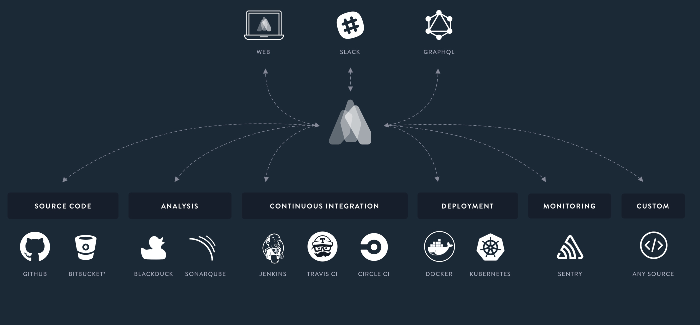

Try Atomist Now!
UNDERSTAND
Unlock information from all your development and delivery tools. See and control your entire flow.
- Always know the state of your software. See information in context, without the noise.
- Take action right there, where you need to. No need to find the right place in four other tools.
- Keep your team in sync and shipping with a shared view of your delivery.
- See context in Slack, in atomist.com, or via our API.
CONTROL
Unblock delivery and let the shipping flow, be it a simple push or multi-step deployment.
- Take action directly in Atomist – create, merge, deploy, promote.
- Deploy to Kubernetes, Pivotal Cloud Foundry, or your favorite cloud.
- Deploy new code fast without risking production.
- Built-in support for Spring based microservices.
- Built-in support for Kubernetes.
AUTOMATE
Integrate any step into your flow. Atomist’s extensible event model makes it a snap.
- Works with your existing toolset of source control, build tools, CI, deployment and security tools.
- Automate what’s working, replace what isn’t. Atomist adapts to the way you work.
- Add security scans to every project in one step, or as many as you need.
- Customize and extend with a powerful open-source automation API.
SIMPLE, POWERFUL, OPEN SOURCE AUTOMATION API
Automate your development process, increase visibility.
Create Project
Update Dependencies
Bot Command
@CommandHandler("Kotlin Spring 5 generator", "Generate a new spring Kotlin project")
export class KotlinSpring5 extends JavaSeed {
public projectEditor(ctx: HandlerContext, params: this): ProjectEditor {
return transformSeed;
}
}
@CommandHandler("Upgrade versions of Spring Boot across an org", "upgrade spring boot version")
export class SpringBootVersionUpgrade extends EditorCommandSupport {
@Secret(Secrets.userToken(["repo", "user"]))
protected githubToken;
@Parameter({
displayName: "Desired Spring Boot version",
description: "The desired Spring Boot version across these repos",
pattern: /^.+$/,
validInput: "Semantic version",
required: false,
})
@CommandHandler("Query Stack Overflow", "search so")
@Tags("stack-overflow")
export class SearchStackOverflow implements HandleCommand {
@Parameter({ description: "your search query", pattern: /^.*$/ })
public q: string;
public handle(ctx: HandlerContext): Promise {
return axios.get(`${apiSearchUrl}${encodeURIComponent(this.q)}`)
.then(res => this.handleResult(res, this.q))
.then(msg => return ctx.messageClient.respond(msg) });
}
}